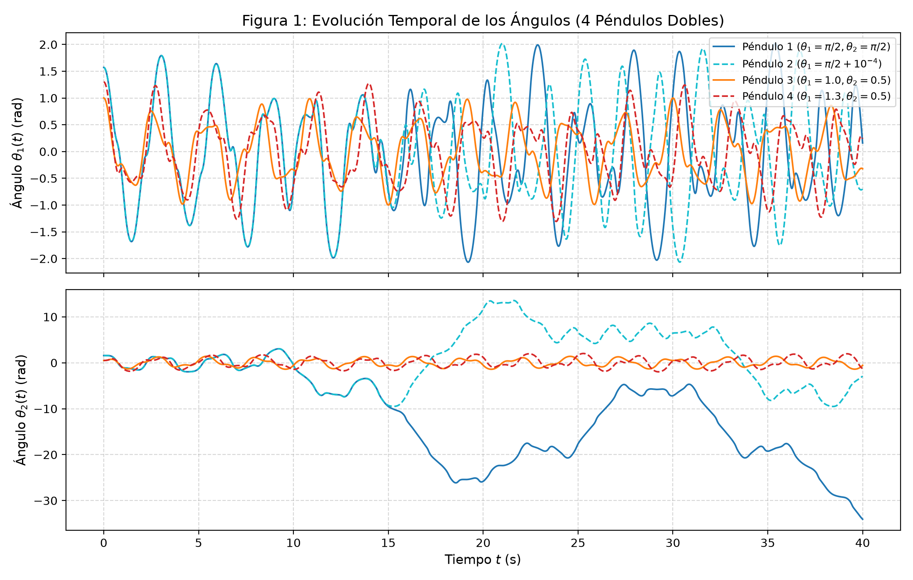
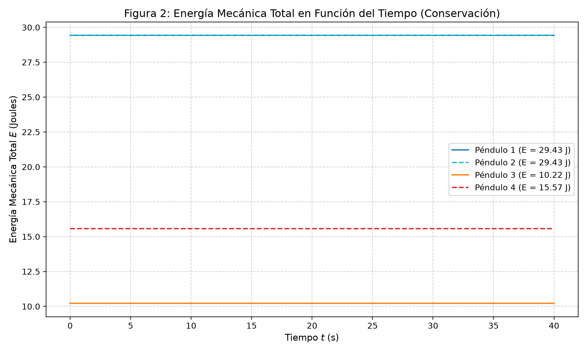
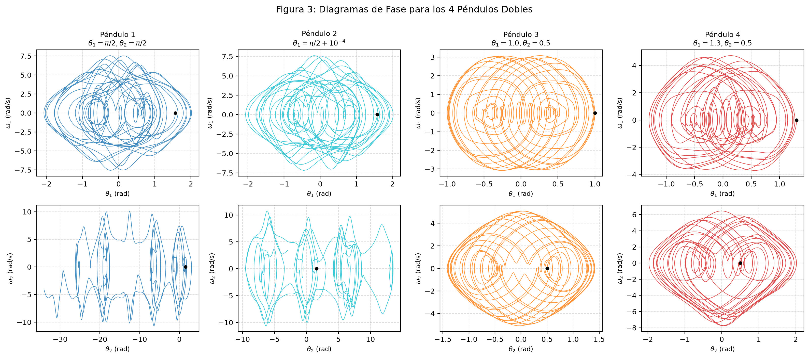
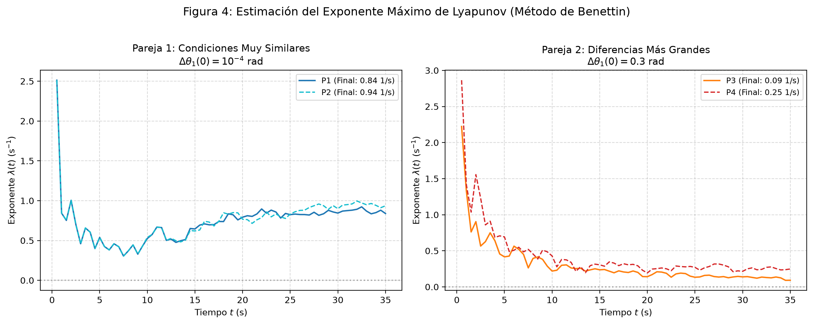
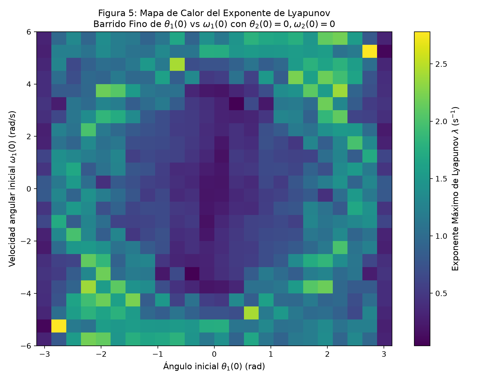

Simulación de 4 Péndulos Dobles, Conservación de Energía y Caos
Para estudiar de forma directa y didáctica la sensibilidad a las condiciones iniciales y la dinámica general, se definieron 4 péndulos dobles agrupados en dos parejas estratégicas:
| Péndulo | Grupo | Condiciones Iniciales \([\theta_1, \omega_1, \theta_2, \omega_2]\) | Propósito del Ensayo |
|---|---|---|---|
| Péndulo 1 | Pareja 1 (Muy cercanas): \(\Delta\theta_1 = 10^{-4}\text{ rad}\) (\(\approx 0.0057^\circ\)) |
\([\pi/2, 0.0, \pi/2, 0.0]\) | Demostrar el caos determinista: dos estados casi indistinguibles evolucionan idénticos al inicio y divergen exponencialmente tras \(t \approx 10\text{ s}\). |
| Péndulo 2 | \([\pi/2 + 0.0001, 0.0, \pi/2, 0.0]\) | ||
| Péndulo 3 | Pareja 2 (Diferencias mayores): \(\Delta\theta_1 = 0.3\text{ rad}\) (\(\approx 17.2^\circ\)) |
\([1.0, 0.0, 0.5, 0.0]\) | Comparar dinámicas con energías y amplitudes claramente diferenciadas desde el primer instante. |
| Péndulo 4 | \([1.3, 0.0, 0.5, 0.0]\) |
Se extendió el intervalo temporal de simulación a 40 segundos para observar tanto la fase de coincidencia como la divergencia total a largo plazo.

Observación clave: Las curvas del Péndulo 1 (azul continuo) y Péndulo 2 (cian punteado) son visualmente indistinguibles entre \(t = 0\) y \(t \approx 10\text{ s}\). A partir de allí, la mínima perturbación microscópica se amplifica hasta volver las trayectorias totalmente dispares. En cambio, P3 (naranja) y P4 (rojo punteado) muestran oscilaciones desfasadas desde el inicio debido a su diferencia inicial más apreciable.
Representación directa y transparente de la energía mecánica total \(E(t) = T(t) + V(t)\) en Joules para cada péndulo:

Grilla de \(2 \times 4\) subgráficos que muestra la trayectoria en el espacio de fases de cada péndulo:

Nótese cómo los Péndulos 1 y 2, al poseer la mayor energía, exploran una región mucho más extensa del espacio de fases rellenando lazos intrincados, mientras que P3 y P4 permanecen confinados en regiones más acotadas acordes a su menor energía total disponible.
Calculamos la estimación temporal del exponente de Lyapunov \(\lambda(t)\) mediante el método de Benettin con renormalizaciones periódicas:

Conclusiones físicas:
Se implementó un barrido fino de \(24 \times 24 = 576\) puntos (más del doble de resolución que la versión anterior), basado en la referencia clásica de la literatura:

Se aprecian las islas de baja divergencia / regularidad (tonos oscuros hacia el centro, con velocidades moderadas) rodeadas por el mar de alta sensibilidad caótica (tonos claros brillantes) a medida que aumenta la energía rotacional.
Para correr el script en Visual Studio Code o desde consola:
python pendulo_doble.py